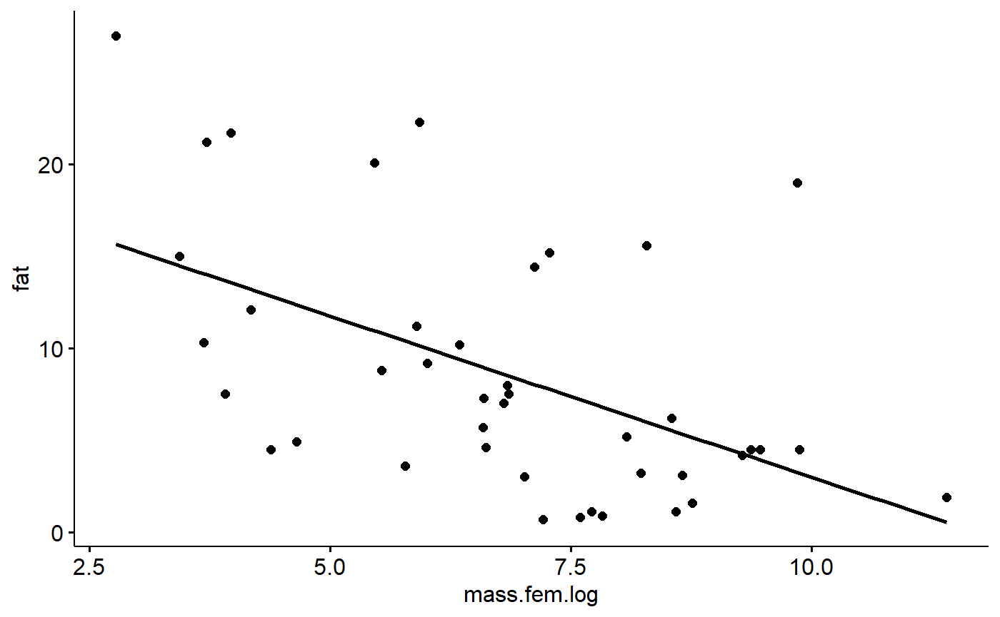
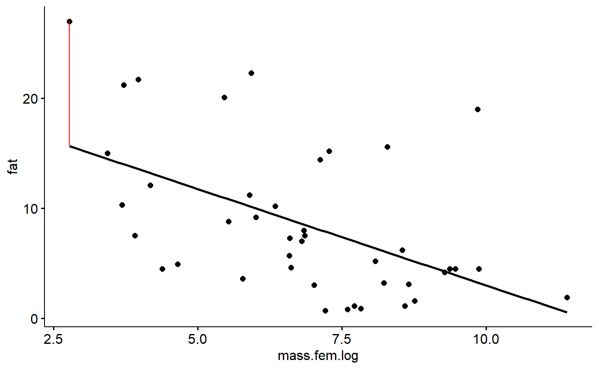
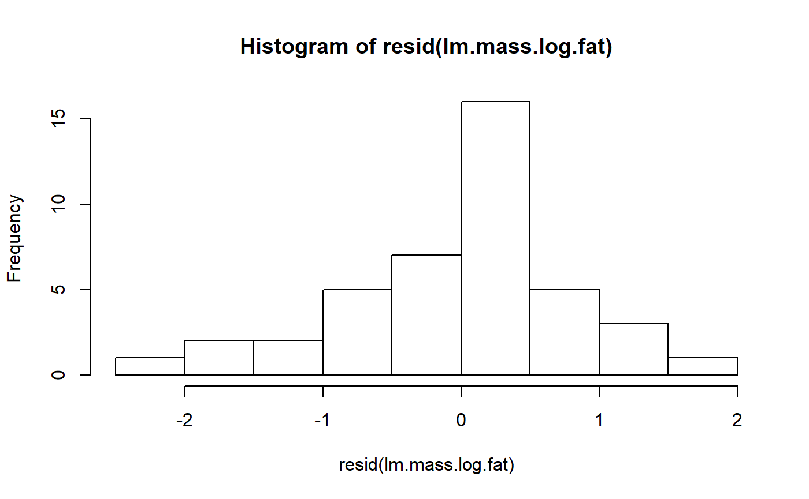

- Regression diagnostics
Vignette Author
2018-11-19
g-linear_reg_diagnostics.RmdIntroduction
In order for inference from a regression model to be valid several assumptions need to be reasonably met:
- The residuals are normally distributed (normality assumption)
- The residuals have a constant variance accross the range of the predictor (assumption of constant variance, aka “homoskedasticity”)
- Data points are independent of one another; that is, the data points don’t occur in meaningful groups (such as familities), data points collected spatially close to each other related, and data points collected close to each other in time are related.
- The true relationship between the preditor x and response y is indeed linear
These are in approximate order of increasing importance (Gelman and Hill 2007). Historically, biologists have been very concerned with normality, perhaps because its the easiest to attempt to test, but its frequently not a big deal. Normality can usually be improved using a log transformation.
The assumption of constant variance is more important. This is the same assumption as in t-test and ANOVA of homogenous variances in each group. My impression is that biologists have typically thought about this more for t-tests and ANOVA, and less for regression, but don’t quote me on that. Log transformation can improve homoskedasticity.
Independence is a big deal, and can only be addressed using more advanced models. The other assumptions can be probed using graphical displays (favored by most) or statistical tests (still used by some). The impacts of some forms of non-independence can be explored in the data (temporal and spatial correlations) but others might only be apparent from the design of the study (grouping, clustering).
The non-independence of data points can occur due to things being grouped physically together, such as mice sharing a cage, or otherwise sharing a related condition, such as patients who were all treated by the same doctor. Things that are otherwise independent, such as two trees of different species growing in a forest, might experience similiar environmental conditions if they are close to each other, or could experience very different conditions if they are far apart. “Spatial autocorrelation” is a non-indepndence that occurs due to spatial proximity, while “temporal autocorrelation” occurs due to proximity in time.
In this tutorial we’ll look at our model of milk fat versus female (maternal) body size and examine if these data meet these assumptions.
Preliminaries
Load data
Install the mammals milk package if needed.
# install_github("brouwern/mammalsmilk")You can then load the package with library()
library(mammalsmilk)The example data is milk_primates
data("milk_primates")Log transformation makes things more linear.
#this could be done with dplyr::mutate() too
milk_primates$mass.fem.log <- log(milk_primates$mass.fem)Load libraries
library(ggplot2)
library(ggpubr)
#> Loading required package: magrittr
library(cowplot)
#>
#> Attaching package: 'cowplot'
#> The following object is masked from 'package:ggpubr':
#>
#> get_legend
#> The following object is masked from 'package:ggplot2':
#>
#> ggsave
library(bbmle)
#> Loading required package: stats4
library(broom)
library(arm)
#> Loading required package: MASS
#> Loading required package: Matrix
#> Loading required package: lme4
#>
#> arm (Version 1.10-1, built: 2018-4-12)
#> Working directory is C:/Users/lisanjie/Documents/1_R/git/mammalsmilk/vignettesNote that library() won’t load a package that you haven’t previously downloaded!
Fit the linear model
Recall that our data look like this
gg.milk <- ggscatter(data = milk_primates,
y = "fat",
x = "mass.fem.log",
add = "reg.line")
gg.milk
We can fit a model with lm()
lm.mass <- lm(fat ~ mass.fem.log,
data = milk_primates)We can get the intercept and slope of the modle using the coef() function
coef(lm.mass)
#> (Intercept) mass.fem.log
#> 20.514997 -1.751746This indicates that the line through the data points is described by the equation
fat = 20.51 + -1.75*log(female mass)
If we want to estimate the fat content of a primate with a body mass of 65kg grams we could calculate to get the mass in grams.
mass.grams <- (65*1000)
mass.grams
#> [1] 65000Then plug this into the equation
20.51 + -1.75*log(mass.grams)
#> [1] 1.116251We would predict that a primate weighting 65 kg (65000 grams; or a rodent of unusual size, since we included them in our data too) would have a milk fat content of 1.12 %.
We see this if we find where our x value intercepts the regression line, and then trace it back to the y axis. We can draw lines on our graph using geome_hline and geom_vline (h=horizontal, v = vertical)
We can see where our 65kg mammal would be along the x axis like this
gg.milk +
geom_vline(xintercept = log(mass.grams))THen trace back to the y axis like this
gg.milk +
geom_vline(xintercept = log(mass.grams)) +
geom_hline(yintercept = 20.51 + -1.75*log(mass.grams))
Residuals
Residuals are the difference between observed y value and the one that is predicted by the equation estimated using a regression equation.
Oour smallest x variable can be found like this. First, sort the masses in order
i <- order(milk_primates$mass.fem)Then get just the first value, which is the smallest (default is to sort into increasing order)
i1 <- i[1]Pick some focal columns
j <- c("fat","mass.fem","mass.fem.log","spp") Look at the data associated with the smallest x value
milk_primates[i1,j]
#> fat mass.fem mass.fem.log spp
#> 34 27 16 2.772589 Mus musculusThe smallest animal is the mouse Mus musculus, which has a milk fat of 27%. If we take is log(mass.fem) and plug it into our equation we get a prediciton of its milk fat based on its mass:
mass.mouse <- milk_primates[i1,"mass.fem"]
20.51 + -1.75*log(mass.mouse)
#> [1] 15.65797THe prediciton from the equation is 15.67%, over 11 % lower than what was observed. The difference between the observed y value (27%) and the predicted value (15.7%) is the residual or error. In this case, 27-15.7 = 11.34.
Accessing residuals
We get residuals in R using the resid() command called on a modeling object.
r.i <- resid(lm.mass)We can use our index (i1) from above to see what R calcualtes the residual as
r.i[i1]
#> 34
#> 11.34188R says the residual is 11.34, same as we calculated above.
We can visualize this residual usig geom_segment()
gg.milk +geom_segment(aes(y = 27,
yend = 15.7 ,
x = log(16),
xend = log(16)),
color = "red")
We can visualize all of the residuals if we want.
First, get the data that was fed into the model from the lm.mass object
model.dat <- lm.mass$model
fat <-model.dat$fat
mass.fem.log <- model.dat$mass.fem.log
r.i <- resid(lm.mass)Then plot all of the residausl
gg.milk +geom_segment(aes(y = fat,
yend = fat- r.i,
x = mass.fem.log,
xend = mass.fem.log,
color = "red"))
Residuals should sum to zero
THis isn’t a diagnostic, but somethign to thing about with regards to why everything gets squared in statists.
sum(r.i)
#> [1] -3.885781e-15This is very very very very close to zer.
Residuals should be normal
In order for p-values, confidence intervals etc to be correct the data should be normal. In practice this isn’t a huge deal but its good to check.
hist(r.i)
These residuals aren’t particularly normal. In the original paper, the author’s log transformed fat
milk_primates <- milk_primates %>%
mutate(fat.log = log(fat))
lm.mass.log.fat <- lm(fat.log ~ mass.fem.log,
data = milk_primates)We can check the residuals again
hist(resid(lm.mass.log.fat))
This is maybe a bit better. One problem with a log transformation is that we are working with a percentage, and so that natural transformation is actually the logit transformation.
The arm package has a logit() function. Note that we have to divied fat by 100 because the original data was expressed as a percentage, and arm::logit() wants a fractional value
milk_primates <- milk_primates %>%
mutate(fat.logit = arm::logit(fat/100))Refit the model
lm.mass.logit.fat <- lm(fat.logit ~ mass.fem.log,
data = milk_primates)This is maybe a little more symetrical, but still pretty pointy.
hist(resid(lm.mass.logit.fat))
Some people like to do a test for normality. One option is The Shapiro-Wilk normality test. This can be done with shapiro.test(). Its interesting to compare the results of this test for the three models we’ve run. Below, I run the model and add “$p” to the outside of the call to the model to get just the p-value.
shapiro.test(resid(lm.mass))$p
#> [1] 0.004082116
shapiro.test(resid(lm.mass.log.fat))$p
#> [1] 0.1935287
shapiro.test(resid(lm.mass.logit.fat))$p
#> [1] 0.3969284The first, untransformed model, has a low p-value, meaning we would reject the hypothesis of normality. FOr both of the transformations, we cannot reject the null of normality.
There are two general problems with testing for assumptions like this
- A high p-value doesn’t mean that the assumption is true, it just means you fail to reject the null hypothesis that the assumption is true.
- Usually tests for one assumption (normality) are sensitive to whether the other assumptions are true (constant variance). That is, you often can’t have a valid test for normality if variance is not constant.
https://ademos.people.uic.edu/Chapter12.html#2_regression_assumptions https://ademos.people.uic.edu/Chapter12.html#32_testing_for_outliers:_outliertest()
car::outlierTest() car::ncvTest() car::crPlots()
Pena & Slate. 2006. Global Validation of Linear Model Assumptions. Am Stat.
gvlma::gvlma
“Assumptions of Linear Regression”
Quick-R: Regression Diagnostics
Altman & Krzywinski. 2016. Regression diagnostics. Nature Methods.
Zhang 2016. Residuals and regression diagnostics: focusing on logistic regression. Annals of Translational Medicine.